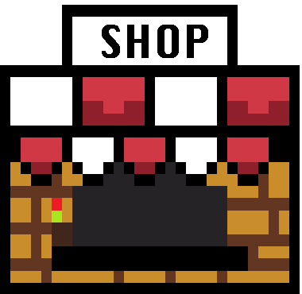

Mijn bezoek
Toen ik de retro gaming winkel binnenstapte, voelde het alsof ik een tijdmachine was ingestapt. Overal waar ik keek, stonden consoles en games die me terugbrachten naar mijn jeugd.
Voor mij is gamen altijd meer geweest dan alleen een hobby. De Wii en DS herinneren me aan avonden vol gelach en plezier. Wat ik het mooiste vond aan deze winkel, was hoe ze deze herinneringen tastbaar maakten. Het gevoel van een oude DS in mijn handen of het zien van een originele Nintendo 64 bracht een warme nostalgie naar boven.
Dit bezoek herinnerde me eraan waarom ik gamen zo leuk vond, en nog steeds vind. Het waren die momenten van pure vreugde waarin het alleen ging om samen plezier maken die gaming zo bijzonder maken. Als je net als ik van nostalgie, retro games en consoles houdt, dan is zo’n winkel een absolute must om te bezoeken.